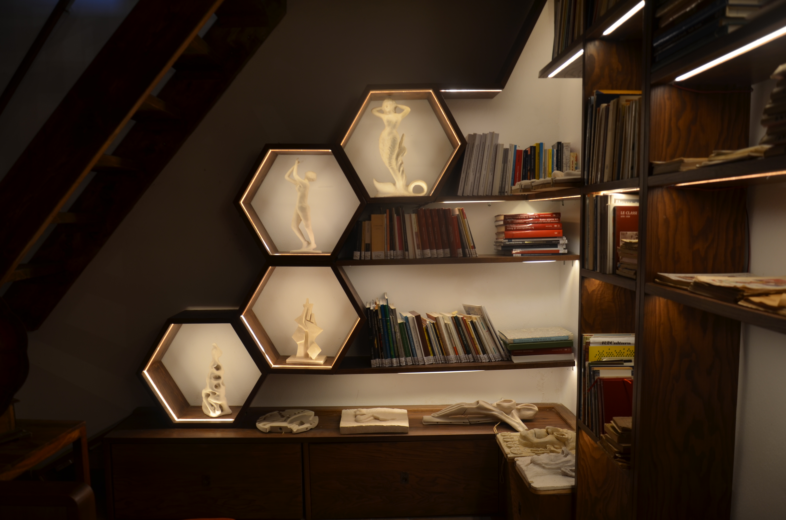

💃🕺 Ballerini
🩰 Look how beautiful these two dancers are! They almost look as if they are about to move, don't they? The sculpture is called Dancers and is made of bronze. It was sculpted by Angelo Di Mario in 1986 and is now in his House Museum in Vallecupola. This small mountain village is just bursting with art!
This statue is made to look light and moving, as if the graceful dance was meant to last forever. And just like in fairy tales or dreams, every shape here tells a story. Want to see it up close? There are many more in the House Museum! And each sculpture is accompanied... by a poem! ✨
The sculpture Ballerini (Angelo Di Mario, 1986) is a bronze work measuring 35×32 cm kept at the Angelo Di Mario House Museum Library in Vallecupola. It depicts two figures dancing, stylised and united in a fluid gesture. The material seems to defy its heaviness, tending towards a compositional lightness that recalls harmony, rhythm and grace.
The work is one of approximately 300 sculptures created by the artist, many of which are now on display in a gallery set up in the Casa Museo thanks to the support of the Lazio Region (Annual Plan 2023). The gallery - designed by Jacopo Eusepi and Massimo Lauricella - hosts around 30 small works in an installation reminiscent of the shape of a beehive, enhancing the dialogue between art, poetry and territory.
Created in 1986, the sculpture Dancers is a bronze work by Angelo Di Mario (1925-2013), exhibited at the Library House Museum in Vallecupola. The composition depicts two dancers wrapped in an ascending, fluid gesture, where the bronze loses its staticity to assume an internal dynamism. It is not just a representation of dance: it is the tension between body and space, between gesture and form.
Di Mario, a self-taught and deeply cultured artist, integrates references to classicism, the Etruscan world, but also influences from the second half of the 20th century into his production. His works move between the raw material and the polished symbol, in a sculpture capable of accommodating light, emptiness and meaning.
Stone - or bronze, in this case - for Di Mario is not just support, but memory: “mute witness” that speaks to those who know how to listen. Even Ballerini seems to sculpt time itself, transforming a fleeting moment into an eternal form.
The sculpture can now be seen in the Art Gallery of the Library House Museum, created thanks to the contribution of the Lazio Region. Each work is accompanied by a poem, testifying to Di Mario's multifaceted vocation: poet, sculptor, etruscologist.
Andrea Alessi (critic and head of the Acquapendente Museum) writes about his sculpture, praised by critics such as Luigi Tallarico:
Hard, strong, immortal like stone, and yet at the same time fragile, delicate and flexible like the plastic forms that slide fast, fluctuate and conquer their autonomy in space. This is the feeling that emerges when viewing the entire sculptural production of Angelo di Mario (1925-2013). Of a multi-purpose work, i.e. one that resists the inexorable passage of time, that is eternal and maintains its qualities unaltered over the centuries, but that similarly is also the carrier of a poetic message, the artistic expression of an authentic and transparent soul.
📚 References:
- Homepage Library Angelo Di Mario
- Alessi, Andrea. La scultura di Angelo Di Mario per Andrea Alessi, in Di Mario, Maria Grazia. Angelo Di Mario (Catalogo). Angelo Di Mario Aps, p.22
- Online Mediagallery of the Sculptures
- Facebook Page of Angelo Di Mario Library
💃 Two bodies, one gesture.
This 1986 sculpture is made of bronze, but seems to dance in the air. It was sculpted by Angelo Di
Mario,
a
poet and artist from Vallecupola, and now lives in his House Museum.
📍You really want to see it? It is in a unique gallery, hidden in the mountains of Lazio. 30 sculptures, 30 poems. A beehive of art and light, built to excite.
🗿Bronze becomes light, space vibrates.
#DancingSculpture #VallecupolaVibes #ArteViva #CasaMuseo #BronzeDancers #AngeloDiMario
| Type | Sculpture |
| Title | Ballerini |
| Sculptor | Angelo Di Mario |
| Holding Institution | Biblioteca casa museo Angelo Di Mario |
| Subject | dancers |
| Description | bronze sculpture representing two dancers |
| Period | 1986 |
| Source | Link |
| Location | Vallecupola (Rocca Sinibalda, RI) |
| Material | Bronze |
| Measures | 35×32 cm |